再攀高峰，尽力无悔！
经历了一个多月的准备，我们终于来到了梦想中的机甲大师最高殿堂——春茧体育馆。自建队以来，无数学长学姐为之不懈奋斗，每一届Ambition队员为之竭尽全力。终于，经历了分区赛的激烈竞争，与一只又一只强劲的队伍交手，我们夺得了通往全国赛复活赛的资格，攀登了战队历史上又一高峰。8月5日，复活赛开始，上午9：35，首战我方蓝方对战红方南京航空航天大学金城学院。
首战面临的对手就是之前区域赛表现强劲的南航金城学院，毫无疑问，对手很强，但我们不会因此退缩。
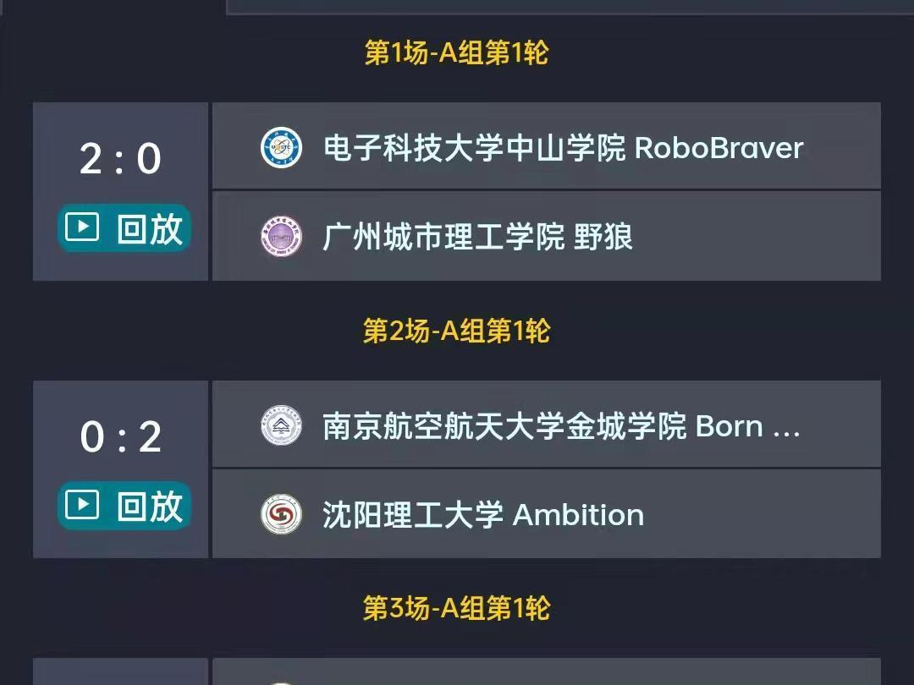
比赛进行到1分10秒左右，我方5号步兵主动袭扰红方在我方前哨站进攻的的英雄机器人，虽然面对其两台步兵围攻，我方5号步兵仍勇敢冲锋，成功击退红方英雄，并在我方3号步兵的掩护下残血撤退。之后我方2号工程到对方环形高地卡位，我方3号、5号两台步兵配合，凭借工程卡位带来的视角优势，3号步兵成功击杀红方5号步兵，取得一血。
比赛进行到2分50秒左右，我方5号步兵成功飞坡，后切进攻红方1号英雄机器人，打断了对方的进攻。之后，在2号工程，3号步兵的配合下，我方5号步兵成功击杀红方英雄，打乱了对方的进攻节奏。趁此机会，我方1号英雄机器人在其它兵种的掩护下，不断进攻对方前哨站，以10发大弹丸击毁了对方前哨站。之后，我方5号步兵掩护其它兵种撤退，并在缠斗中击杀了红方5号步兵，在返回补给点的过程中，面对不断进攻我方前哨站的红方1号英雄，5号步兵再次出击，在红方3、4号步兵的围攻下成功击杀对方1号英雄机器人，取得双杀。
距离比赛结束还剩1分30秒，我方5号步兵再次出击，抓住对方英雄复活回家的关键时刻，再次击杀对方英雄机器人，随后在红方3台步兵机器人的围剿中成功击杀对方4号步兵，距离比赛结束还剩35秒，虽然红方在空中机器人的配合下成功打掉我方前哨站，但我方的进攻节奏没有受到干扰，3号、5号两台步兵相互配合再次击杀红方英雄机器人。最后25秒，我方5号步兵进入红方半场伺机进攻红方哨兵机器人，之后3号步兵紧随其后，两台步兵机器人不断对红方哨兵机器人发起攻击，而我方1号英雄则成功挡住了对方绕后进攻的5号步兵机器人，实现了较好的防守，最后我方凭借哨兵血量优势成功拿下第一小局比赛的胜利。
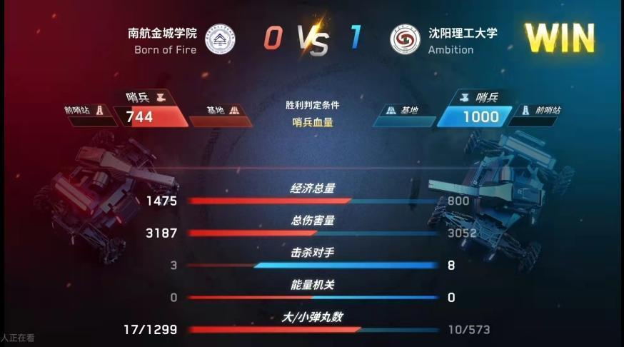
第二局比赛，在我方步兵数量不如对方，经济受到压制的不利情况下，前四分钟，我方2号工程机器人主动到我方前哨站前方卡位，阻挡对方的进攻，3、5号步兵积极防御，击退了对方的一次次进攻。
距离比赛结束还剩3分钟，我方两台步兵机器人主动进攻，抓住红方3号步兵超功率阵亡的机会，我方3号步兵成功击杀对方5号步兵。随后我方5号步兵凭借2号工程卡位创造的机会，击杀红方4号步兵。距离比赛结束还剩两分钟，在我方英雄卡弹的不利情况下，我方5号步兵机器人主动出击，在2号工程，3号步兵的掩护下，不断进攻对方前哨站，将对方前哨站血量磨至445点。
最后20秒，抓住对方机器人回家补给的机会，我方5号步兵在补给成功后再次出击，进攻对方前哨站，在距离比赛结束11秒成功击毁对方前哨站。抓住最后10秒时间，我方5号步兵快速来到红方半场进攻对方哨兵机器人，取得212点血量伤害，最后凭借哨兵血量优势赢得第二局比赛胜利。
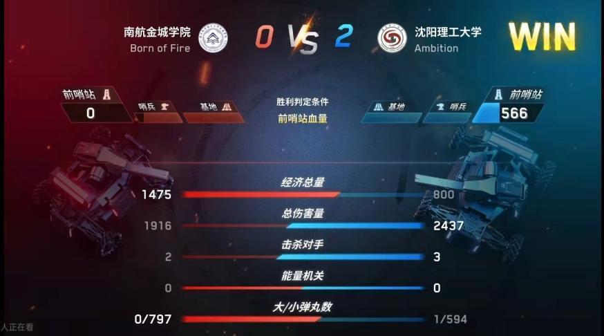
最终，在兵种阵容劣势的不利情况下，我方凭借不同兵种的默契配合，抓住每一个重要时间节点，积极进攻，配合防御，取得了这一场比赛的胜利。
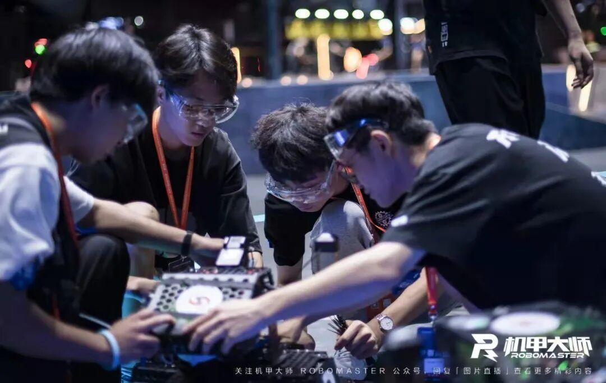
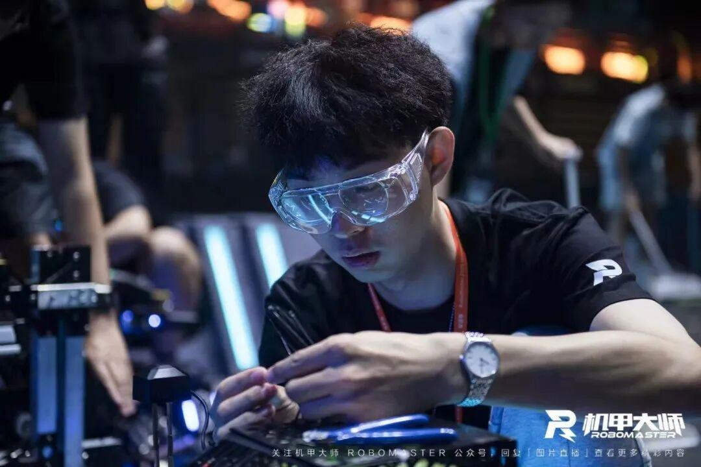
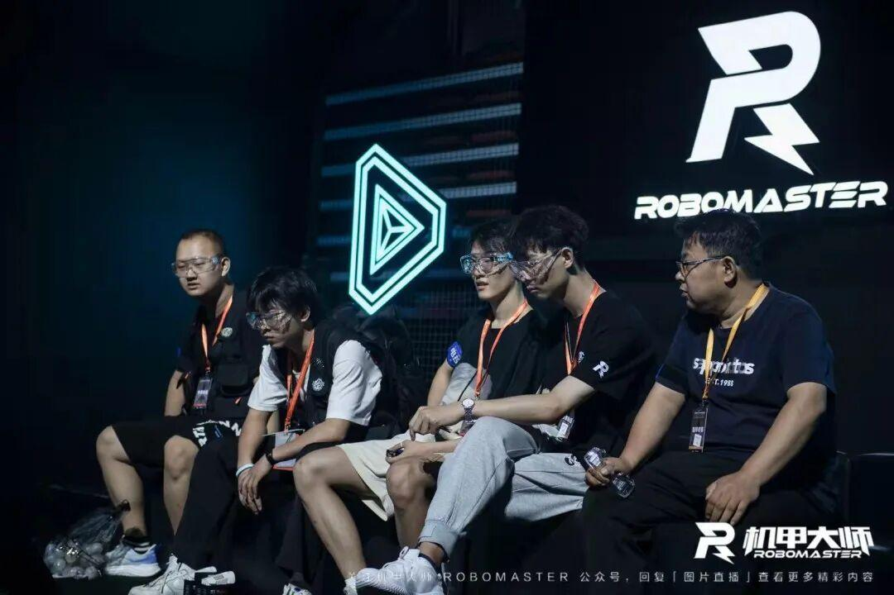
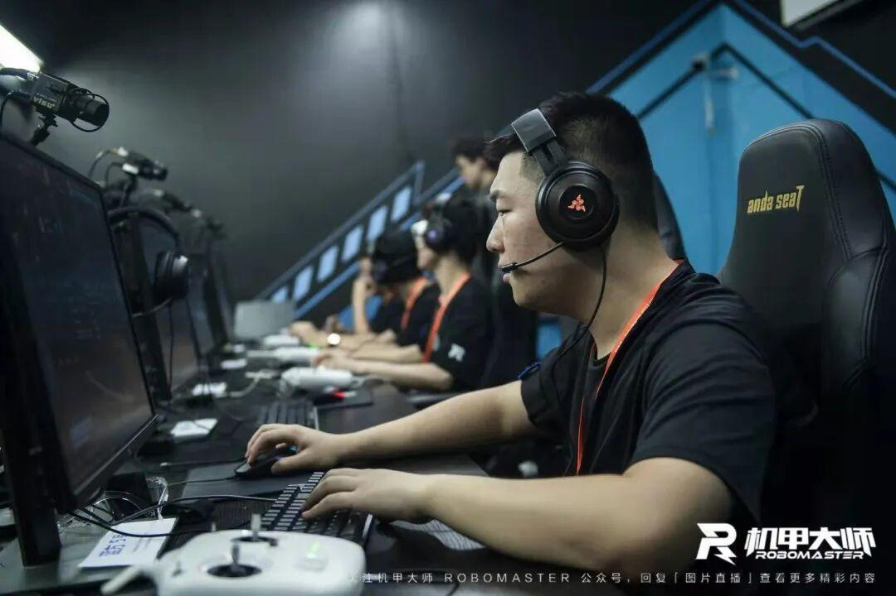
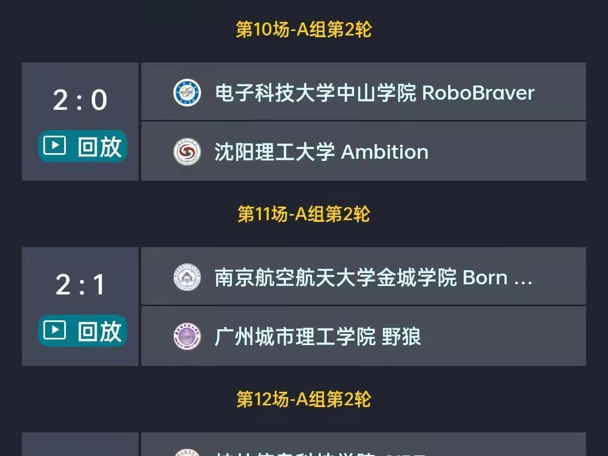
5号下午16：40，开始了我们复活赛的第二场比赛，我方蓝方对战红方电子科技大学中山学院。
第一小局比赛开始30秒，面对红方英雄配合步兵对我方前哨站的精准进攻，我方5号步兵飞坡出击，成功驱赶了对方的两台机器人。不幸的是，由于地形问题，我方5号步兵回防的过程中在“落凤坡”不幸翻车，使我方兵种数量处于巨大劣势，最终在对面多兵种的协同进攻下不幸战败。
第二小局比赛，我方2号工程机器人开局进入对方半场进行干扰，在比赛进行1分30秒，我方5号步兵成功飞坡，驱赶了对方进攻前哨站的1号英雄机器人，并来到对方环形高地，成功击杀了红方4号步兵，随后再次转向，成功击杀了红方1号英雄机器人，取得双杀，并利用对方的飞坡成功撤离。
比赛进行到3分40秒，我方5号步兵再次成功飞坡，不断追击红方1号英雄机器人，最终在我方环高成功击杀红方英雄，之后回家补给，再次飞坡，跨越整个半场，寻找战机，击杀了对方刚复活的红方英雄。距离比赛结束还剩两分钟，由于我方哨兵的意外模块离线阵亡，使得我方基地护甲展开，陷入不利的局势，被对方英雄抓住机会绕后进攻，使我方基地陷入巨大的血量劣势，并最终导致第二小局比赛的失利。

下午对战电子科技大学中山学院的比赛，让我们看到了自己的不足，虽然最后不幸落败，但我们看到了改进的地方，也成功发挥出了自己的实力，打出了我们的风采，下一场，加油！
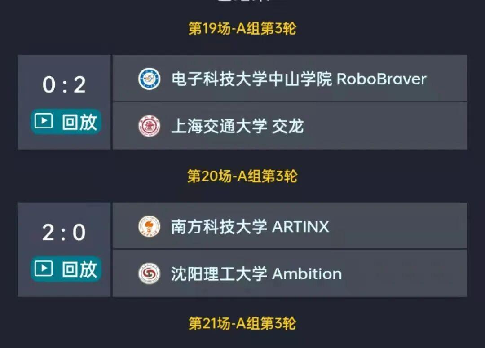
第一小局比赛，我方2号工程机器人开局进入对方半场进行干扰，5号步兵成功飞坡，击杀红方3号步兵，我方3号步兵紧随其后，飞坡成功，击杀红方4号步兵。可惜由于兵种阵容劣势，我方后期难以兼顾，对方利用巨大经济优势不断转换成进攻优势，使我方逐渐陷入劣势，虽然我方英雄机器人在比赛最后两分钟主动进攻，但还是难以挽回前期劣势，被对方英雄机器人不断吊射基地，并最终因此落败。
第二小局比赛，我方工程开局进入对方半场干扰，5号步兵随后进入对方环高进攻，袭扰了红方4号步兵，开局取得较好局面。不过随后因地形因素造成的2号工程和3号步兵的翻车，使我方在阵容上陷入劣势，之后我方5号步兵不断寻找战机，希望通过争夺小能量机关取得buff加成，可惜因时间落后被对方抢得。之后我方被红方利用巨大经济优势和兵种数量优势不断压制，最终不幸落败。
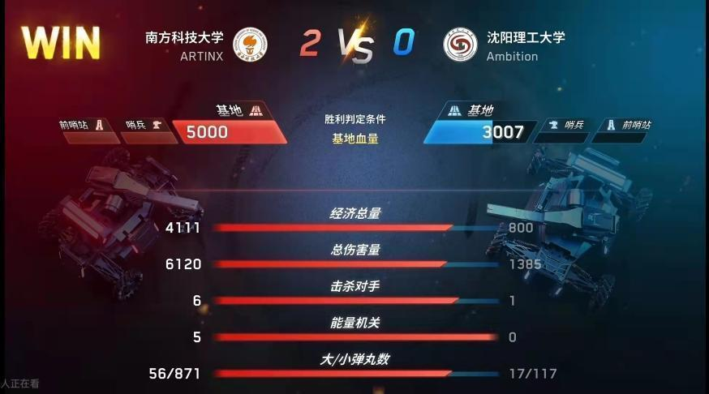
通过与南方科技大学的比赛，暴露了我方在工程机器人兑矿能力上的不足，工程机器人是RM赛事的经济核心，对比赛的进程至关重要。我们会努力弥补这一不足，争取在以后的比赛实现技术突破。
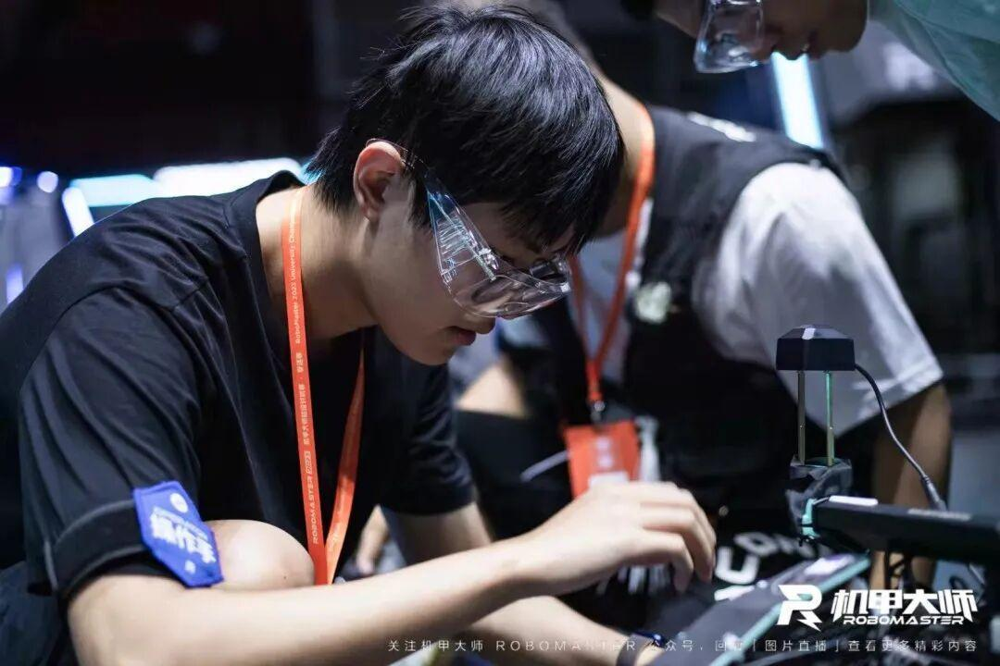
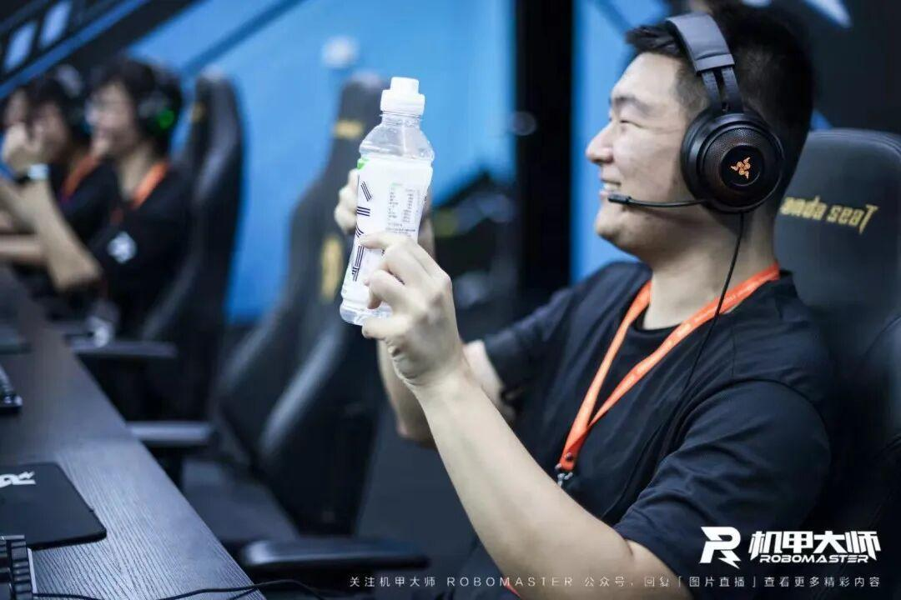
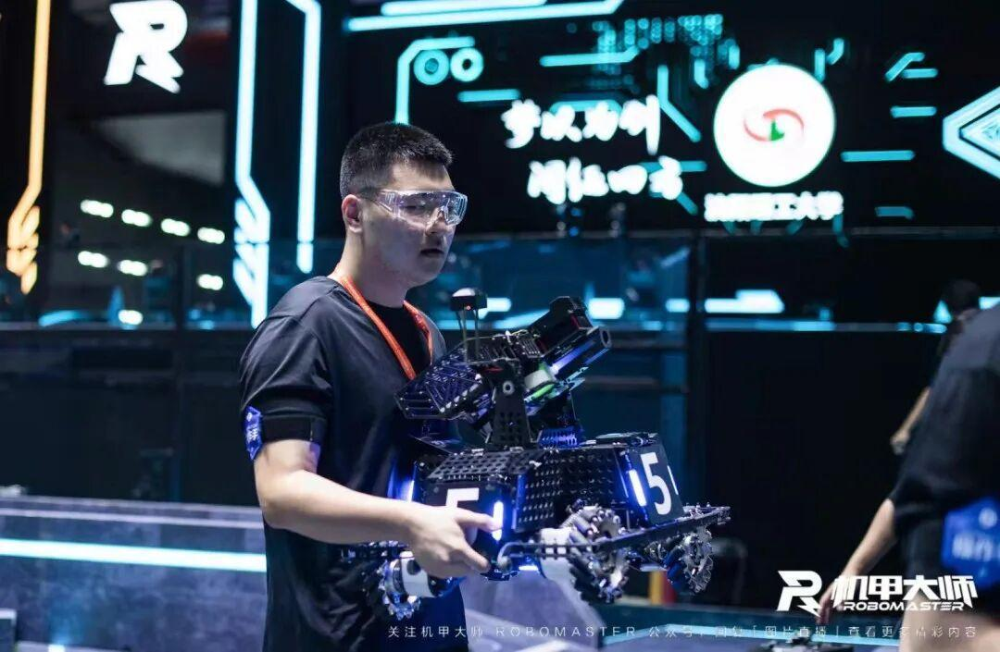
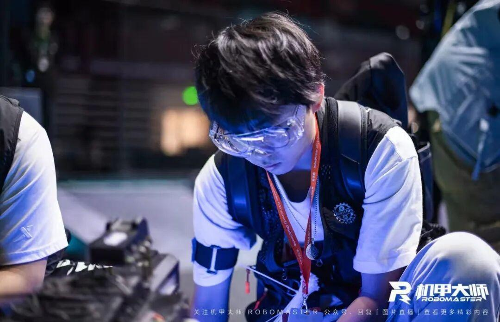
片
复活赛虽就此止步，但对技术探索永无止境!
每一个新高度都是一个新起点
每一次挫败都是为了下一次更好的新开始
今年我们登上了新的高峰
但更壮丽的事业还在前方
我们的征途是超越自我！
Ambition，加油！
排版|李现亮
图片|大疆官方
文字|李现亮